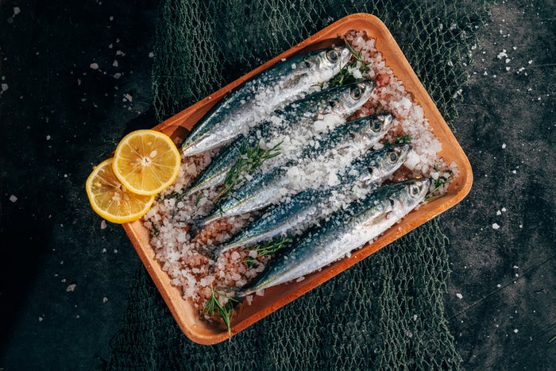
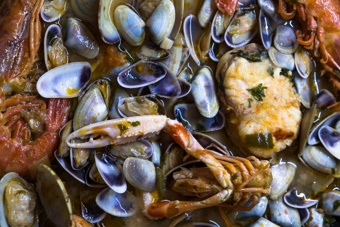
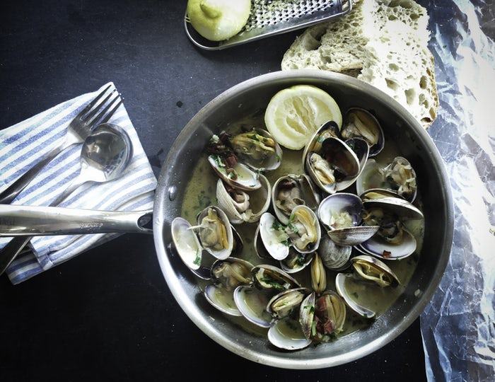
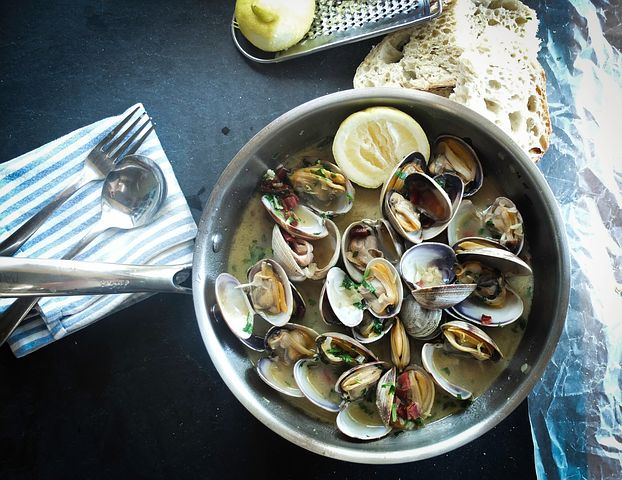
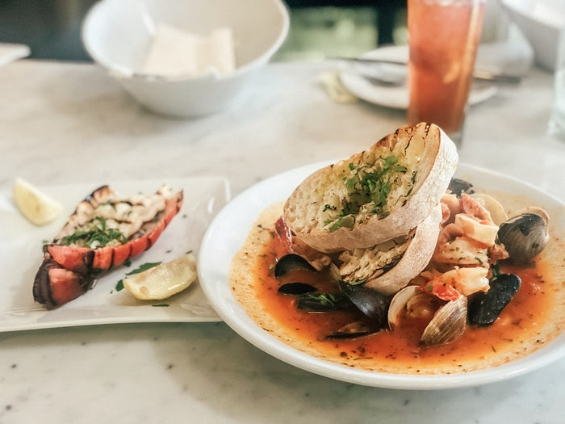
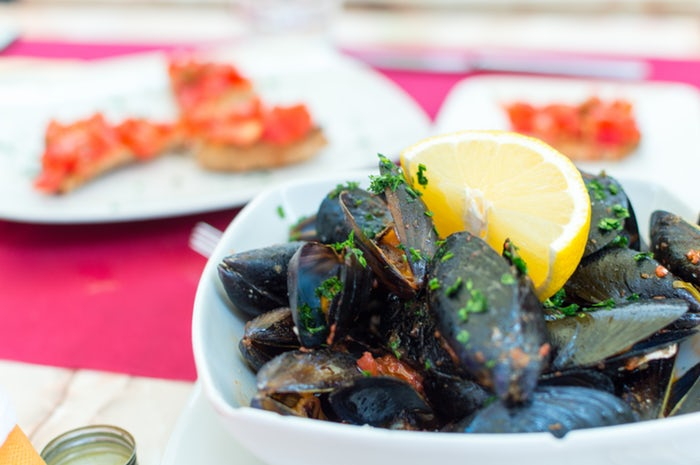
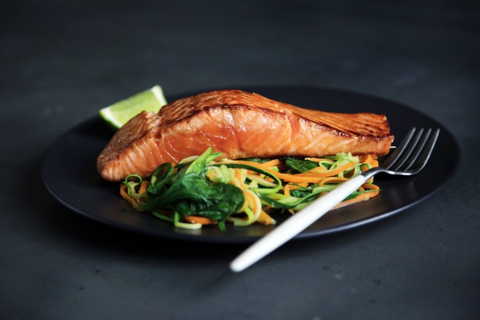

From saltwater and freshwater fish to deep water shellfish, seafood is a beloved delicacy. Seafood is nutrient-rich, serves as a good source of protein, vitamins and minerals and is rich in omega-3 fatty acids and in the reduction of common diseases. So as you embark on yet another crawfish boil or fish fry, know that the seafood you're consuming will yield many benefits!
Here are the Top 10 from Health Fitness Revolution and author of the book ReSYNC Your Life Samir Becic:
Provides essential nutrients -
Though the specifics depend upon which type seafood you consume, seafood is known for being a natural source of vitamins and minerals. B-complex vitamins, vitamin D and vitamin B. B-complex vitamins (vitamins such as B1, B3, biotin, B12, etc.) perform many different functions, influencing energy production, metabolism, concentration, and even beauty! Some types of fish, such as salmon, are rich in vitamin A, which helps protect vision and boost the immune and reproductive system's capabilities. Another vitamin found in some seafood - often the fatty skin of salmon, tuna and others - is vitamin D, which promotes healthy bone growth, calcium absorption, and boosts immune system efficiency as well as cell growth.
Promotes heart health -
While seafood is nutritious enough to be low in saturated fats and high in protein, its greatest health benefit lies in its abundant source of omega-3 fatty acids. While several studies have been conducted on the benefits of the omega-3 fatty acids, they are most notably known for their benefits in heart health. In fact, they can significantly reduce the risk of cardiovascular events from occurring, such as arrhythmias, strokes, and heart attacks. Though many prefer to acquire their omega-3 fatty acids with capsules, scientists prefer the actual consumption of actual seafood.
Good for your joints -
Eating seafood on a regular basis has been proven to ease the symptoms of arthritis. Research has shown that omega-3 fatty acids can ease tender joints and reduce morning stiffness in subjects with rheumatoid arthritis.
Maintains eyesight -
A 2014 study published in the Investigative Ophthalmology & Visual Science Journal suggests that those who consume omega-3 fatty acids found in seafood are less likely to suffer from age-related macular degeneration, a disease that can result in the loss of vision. Fish and shellfish can also boost your night vision. Eating oil-rich fish regularly can help to keep the eyes bright and healthy.









Good skin -
Eating seafood helps preserve moisture in the skin. Your skin's natural glow is affected more from what you eat than what you apply directly to it. The omega-3 fatty acids in seafood protect the skin against UV rays from the sun and recent research has found limited findings suggesting fish oil can help reduce the prevalence of acne.
Boosts brainpower -
Seafood omega-3s may lower the risk of developing Alzheimer's disease. A sufficient intake of DHA and EPA found in omega-3 fatty acids promote proper brain growth in infants and children. ( needs research) and recent research speculates long-term consumption of omega-3 fatty acids can boost cognitive function in aging women.
Fights against depression -
Recent research has shown an association between the consumption of omega-3 fatty acids and risk of depression ad has found that consuming omega-3 fatty acids can not only decrease the risk of depression but has the potential to treat depression as well. Consuming more seafood can help you have a better, more positive outlook on life.
Pregnancy benefits -
Studies indicate that eating more fish has positive benefits on birth weight because it enhances fetal growth and development. Seafood consumption also aid in reducing preterm delivery and is essential for central nervous system development. Furthermore,
Improves immune function -
Increased omega-3 consumption can reduce the symptoms of asthma and certain allergies. Selenium is a potent antioxidant found in seafood that is known to improve the immune system.
Many choices -
Who doesn't like having options, right? There are a great variation of seafood to choose from, and while one of the greatest deterrents to seafood is "that sea taste" there are many different healthy ways to prepare your meal to help get rid of that fishy feeling.